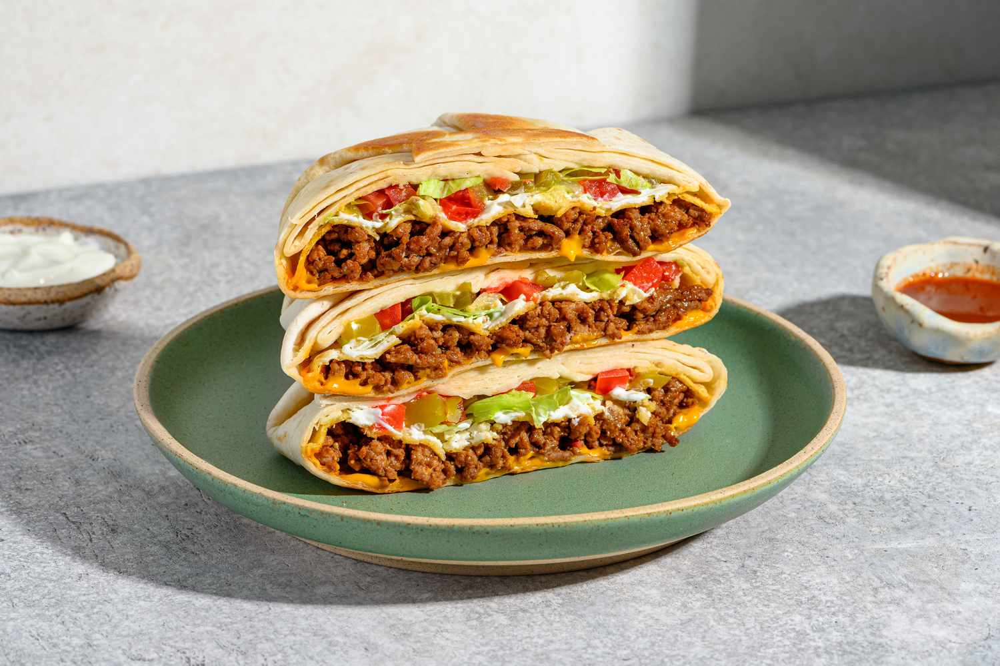

Home

Description
This homemade crunchwrap is the perfect mix of crispy, cheesy, and packed-with-flavor comfort food. It layers seasoned meat, warm nacho cheese, fresh toppings, and a crunchy tostada shell all inside a soft tortilla that gets toasted to golden perfection. Every bite has that satisfying contrast—melty and crisp at the same time—without needing a drive-thru. It’s a fun recipe to make when you want something a little different but still easy and filling.
Ingredients
- Mission® Carb Balance burrito tortillas
- 448g 96% lean ground beef
- Oil spray
Seasoning
- 3g chili powder
- 1g garlic powder
- 1g onion powder
- 1g paprika
- 3g ground cumin
- 1g crushed red pepper flakes
- 0.3g dried oregano (1/4 teaspoon)
- 6g salt
- 2.5g black pepper
Fillings
- 1.2 tortillas
- 45g nacho cheese
- 84g cooked taco meat
- 14g reduced-fat sharp cheddar cheese
- 1 tostada (12-14g)
- 42g fat-free Greek yogurt OR
- 42g cilantro lime salsa
- Lettuce
- Tomato
Steps
- Mix all Seasoning ingredients in a small bowl until combined.
- Cut the tomato in half, remove the seeds with a spoon, and dice the remaining tomato.
- Rough chop a few pieces of lettuce and shred the sharp cheddar cheese.
- Lightly spray a pan with oil, turn the burner on medium-low, and start adding small chunks of ground beef until all the beef is in the pan.
- Once all the beef is added, lightly spray the top of meat with oil and sprinkle the seasoning over the top.
- Stir the meat every 1-2 minutes until browned and seasoned.
- Pour meat into container or onto plate and cover.
- Into a large pan on low heat, add one tortilla at a time and heat for about 15-30 seconds or until pliable.
- Using scissors, cut a small circle from another tortilla, about a fifth of the size of the tortilla. This will be used to help keep the Crunchwrap® sealed.
- Place the larger warmed tortilla on the counter and add nacho cheese, ground beef, and cheddar cheese. You should spread these ingredients out the size of the tostada.
- Add tostada on top of all ingredients, then spread a thin layer of Greek yogurt evenly over top of tostada.
- Top the tostada with lettuce, tomatoes, and the small, pre-cut tortilla.
- Fold the first side of the tortilla towards the center, then fold the piece right next to it, and repeat until finished. This should take 5 folds to seal.
- Place the completed Crunchwrap® folded side down into a preheated pan on medium heat.
- Brown the Crunchwrap® to your desire, flip, and do the same on the top side.
- Grab some Taco Bell® sauce and enjoy!